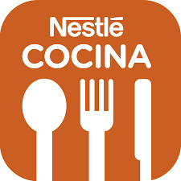

RESTAURANTE
Todos los caminos conducen a hure du déjur. Todo comenzó en un mercado llamado “Les Halles” intentando alimentar a los trabajadores del lugar. Cambiaron sus alrededores pero nunca su esencia. Hoy es visitado por miles, y nunca ha cerrado sus puertas desde su apertura. En México hure du déjur ha recibido a celebridades, que le han dado el prestigio y el gran ambiente que se vive hasta hoy.

Jugo Fresco, Croissants, Baguetin Tostado con Mantequilla y Mermelada, Café, Té o Leche.
Jugo Fresco, Plato de Frutas, dos Huevos Revueltos a la Mexicana con Machaca y Pan Dulce, Café, Té, Leche o Chocolate.


Fuente de Mariscos de los Príncipes 4 Ostiones Kumamoto, 4 Baja California, 4 Extra Grandes, 4 Almejas Blancas, 4 Almejas Chocolata y 4 Camarones Grandes
Bandeja de Degustación de Ostiones 3 Ostiones Franceses Fina-Clara, 3 Franceses Especiales, 3 Baja California, 3 Kumamoto


HEURE DU REPAS
Envíenos un E-mail y en breve nos comunicaremos
HDR-5@gmail.com
Nos Ubicamos En:
Avenida Universidad #35, Colonia Acatlima, Huajuapan de León, oaxaca
Telefono:
953 123-87-59
Horarios
Abierto de 8:00 am a 11:00 pm los 365 días del año
HEURE DU REPAS cuenta con todas las licencias permitidas para un restaurante otorgadas por la autoridad del Honorable ayuntamiento de Huajauapan de León y por La agencia de Acatlima, Ademas de haber aprobado todas las inspecciones de Salubridad por lo que, usted puede estar seguro de que nuestros platillos son saludables y de buena calidad.
Puede visitar nuestra página web www.HEUREDUREPAS.com.mx para saber mas acerca de nosotros.
HEURE DU REPAS © Copyright 2018. Algunos Derechos Reservados.
